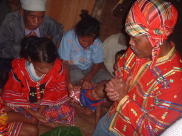
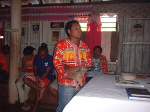

tubad  
/tubad/
v_rt.
“pray”
vi.
for someone (egpanubad, migpanubad/impanubad, agent, eg><ø-paN-) to sacrifice by killing a bird or animal (egpanubaren, impanubad/migpanubad/pigpanubad, patient, eg><en-) often for the sake of a sick person (egpanubaran, impanubaran/migpanubaran, location, eg><an-)
Kenè kew pa keèn su egpanubaran te pad.
Anybody is not yet allowed to eat because there is a prayer first.
O. Syn. salengkat
Eng. sacrifice; pray
Tag. manalángin; magdasál
Ceb. mag-ampò
Ilo.: agkarárag
WBM: tuvad
OCM: Religious Experience (781)
Online dict status: -
Usage level: F
vi.
for someone (egpanubad-tubad, migpanubad-tubad/impanubad-tubad, agent, eg><ø-paN-rdpRT-) to pray intensely (egpanubtubaran, impanubtubaran/migpanubad/pigpanubtubaran, patient, eg><an-pA-rdpCVC-)
Layun kew egpanubad-tubad ke egpanggipanew kew.
Just always pray if you have walk.
O. Syn. eg-ampù
Eng. pray intensely
Online dict status: -
Usage level: M
n.
(tubtubaren, rdpCVC–en) a prayer
Eng. prayer
Online dict status: -
Usage level: R
n.
(panubaran, -an-an) an altar; a spirit house; the thing sacrificed
Egkaaldek a ne egseled te panubaran su kema ke egkeenen a te busew.
I am afraid to get inside a spirit house because demon might siezed me. (Demon might siezed me that's why I'm afraid to get in to a spirit house.)
Data Qual: QDL i think we should change this sentence it is not good sentence for Matigsalug elders...
Eng. altar; spirit house
Online dict status: -
Usage level: R
n.
(panubaranan, -an-an) a specific place where the ritual performed
Egkaaldek a ne egseled te panubaranan su kema ke egkeenen a te busew.
I am afraid to get inside to a ritual place because demon might siezed me. (Demon might siezed me that's why I'm afraid to get in to a spirit house.)
Data Qual: QDL i think we should change this sentence it is not good sentence for Matigsalug elders...
Eng. place; ritual place
Online dict status: -
Usage level: R
n.
(pegpanubad, peg><ø-) a prayer
Ka pegpanubad ne meupiya amana egpaminehen te Manama.
The prayer which is good God will listen it.
cf. ampù
Eng. prayer
Online dict status: -
Usage level: M
Updated by: RJH,JLM,RJH,TME,QDL,QDL
Last updated: 08/Dec/2009
"panubtubari" in song "Manama ne matulus"
"panubtubari" in song "Malehet ne geyinawa ni Hisus"
This page last updated: 19/May/2012
Copyright © 2009-2010, Matigsalug Language Christian Association, Inc